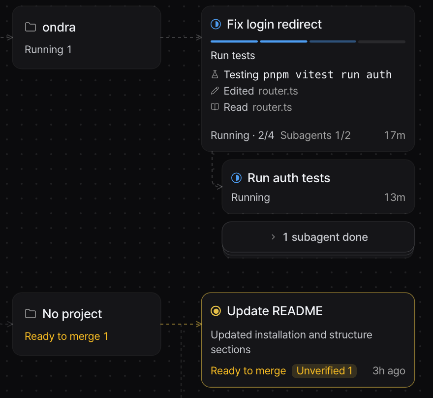
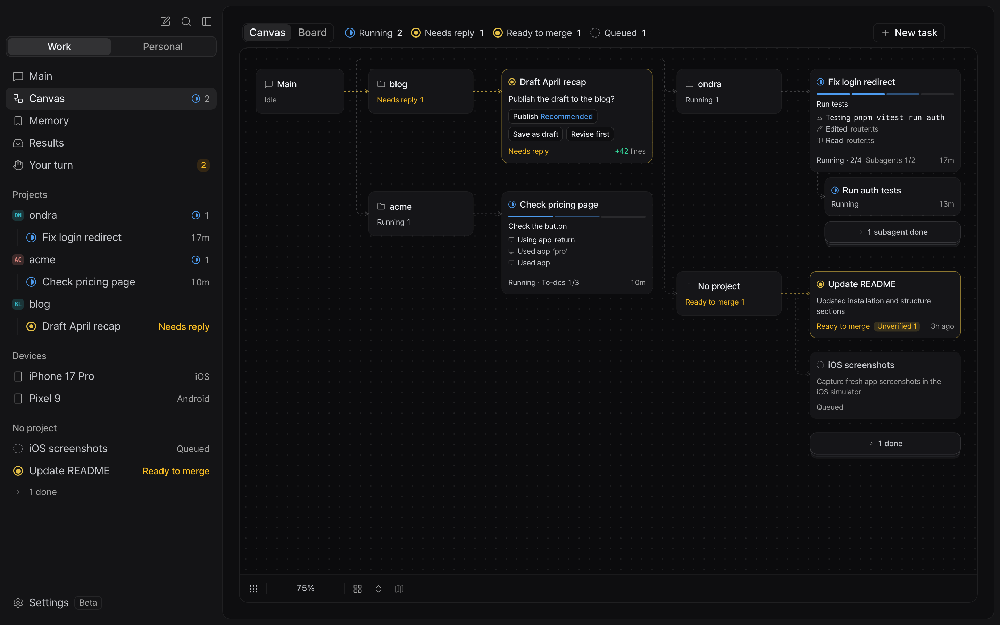
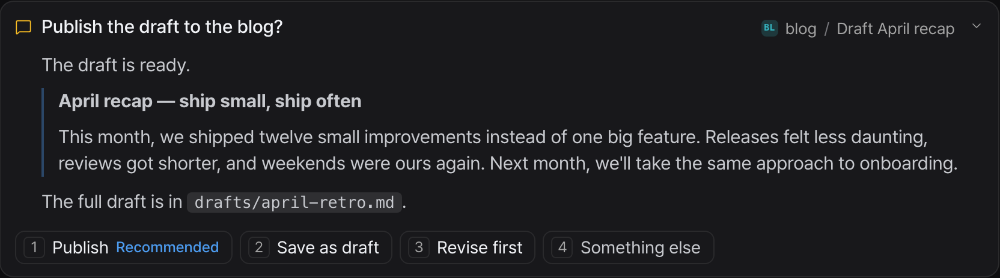

The agent said “all tests pass.” You checked anyway.
Done should mean checked.
When a task says it's finished, Ondra matches that claim against the commands it actually ran and the files it actually changed, and flags anything it couldn't verify.
It checks the session record: was that command really run, did it pass, did the code change afterwards, does the file exist.
Anything that doesn't line up goes back to the task with the reason, up to twice. Whatever still doesn't hold up is marked Unverified.
Risky changes get two reviewers before they finish, one for the design and one for the code.
You get diffs, before-and-after screenshots, videos and test results, not just a summary.

You were keeping every tab's state in your head.
Talk to one chat. See it all on the canvas.
Put several things in one message. Main splits them into tasks and runs them at the same time.
Each task gets its own session, so nothing bleeds together. Turn on a git worktree per task if you want one.
The canvas links Main to projects, tasks and subagents, and shows which tool each task is using right now.

One of your tabs was waiting on you. You didn't know which.
It only asks when the call is yours.
When a task needs your intent or your taste, a card shows up in Main with the options and the context behind them.
Pick one and press Enter, or write your own answer.
Your turn in the sidebar takes you to the next task that needs a reply.
With the window in the background, you get a system notification when a task finishes or needs you.
You can step into a running task and change its direction.

Every new session, you explained the same background again.
Ondra picks up where the last session stopped.
Handoff
Long tasks pass what they did, what they found, the next steps and the evidence to a fresh session. Ask more of a finished task and the new one starts from its results.
Memory
Preferences and lessons are kept in memory as you work. Save one right away with /remember, and review or edit them on the Memory page.
Project chats
Each project has its own chat. Tasks you start there begin in that folder.
You asked for the same thing every morning, and found the broken CI hours later.
Hand recurring work to a routine.
On a schedule
Daily, on certain weekdays, every N minutes, or once. When the time comes, the task starts on its own.
When GitHub moves
A new issue or PR, a review request, a comment on your PR, a failed CI run or a new release can start one.
Just say it
Write “every weekday at 9…” in the chat and Ondra suggests the routine as a card. A run missed while your Mac slept runs once when it wakes.
Close the laptop, and the agents stop too.
Run the long jobs on your other Mac.
Connect another Mac and its projects show up in your sidebar. Their tasks run on that Mac, so they keep going after you close your laptop.
Tasks there use that Mac's files, tools and accounts.
Decision cards, notifications, Main, changes and files, the terminal and results all work as they do locally.
The connection is end-to-end encrypted, and a connected Mac only sees the workspaces and projects you allow.
Either Mac can disconnect or remove the other.
The code was fixed, but you still opened the app to check.
It works beyond the code, too.
Browser
Each task browses in its own tab. Passwords are filled from the macOS Keychain, so the model never sees them.
Mac apps
With permission, it drives Mac apps and captures their windows to check the result.
Mobile
It checks your app in the iOS Simulator or Android Emulator and keeps screenshots. You can drive the device from Ondra too.
Deep research
It splits a question, researches sources and checks quotes against the originals, then collects the answer and evidence in a report and PDF.
Questions
Is it free?
Yes, it's a free beta for now. The app tells you when a new version is out.
What do I need?
An Apple silicon Mac on macOS 13 or later. When you first open Ondra, connect the AI model accounts you use in Settings. Driving Mac apps and capturing windows needs Accessibility and Screen Recording permission, and mobile checks need the iOS Simulator from Xcode or the Android Emulator.
Where do tasks run?
On your Mac. If you've connected another Mac, tasks in its projects run there. Anonymous usage stats can be turned off in Settings.
macOS won't open it the first time.
Right-click the app in Finder and choose Open. If it's still blocked, make sure you downloaded it from the GitHub releases, then run xattr -dr com.apple.quarantine /Applications/Ondra.app once in Terminal.